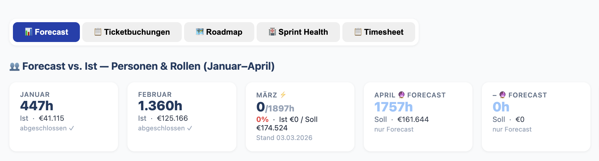
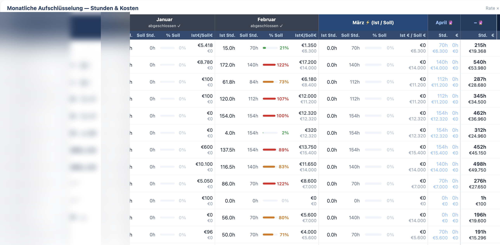
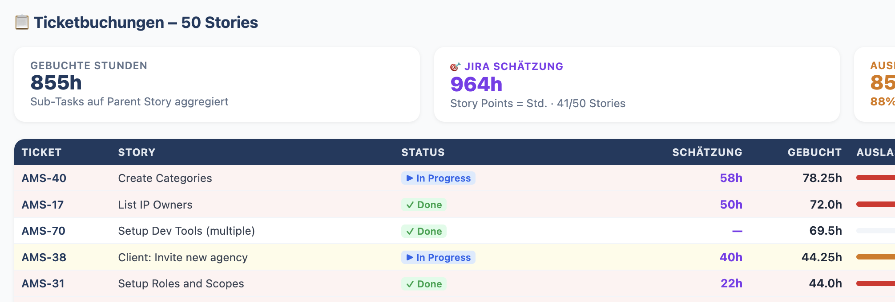
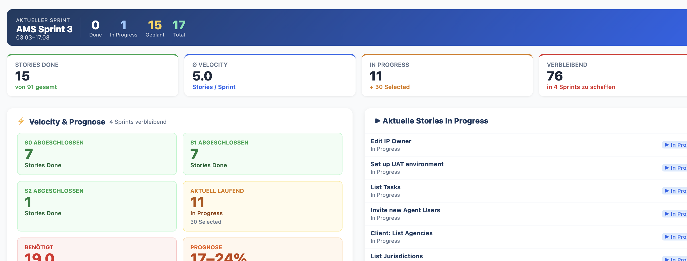
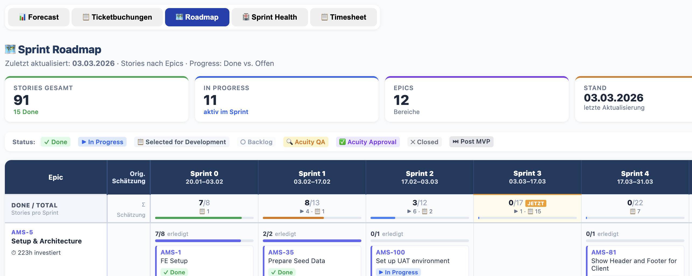

I'm not a developer. I can read code, reason about it, and hold my own in a technical conversation — but I don't write production software for a living. That context matters for what I'm about to describe, because what happened a few weeks ago genuinely surprised me.
I built a fully automated, real-time project controlling dashboard. It pulls live data from three completely different systems, displays sprint health, capacity utilization, and cost tracking across rolling months, and exports cleanly to Excel — all in a single HTML file that opens in any browser, with no installation, no backend, and no subscription.
I built it using an AI agent. And the whole thing took a fraction of the time I would have expected.
The problem I was trying to solve
As a team lead managing a software development team, I need to answer a small set of questions reliably and quickly: Is the current sprint on track? Is the team over- or under-utilized this month? Are we burning hours in line with what we planned and budgeted? Where are the bottlenecks?
None of these questions are complicated. But getting the answers meant switching between three separate systems — a time-tracking tool, Jira, and Confluence — and mentally assembling the picture myself. Every time. That's the kind of low-grade friction that doesn't feel like a big deal until you add it up across weeks.
The obvious fix was a shared reporting view. The non-obvious part was actually building it without a dedicated BI team, without a custom backend, and without asking anyone to change how they work.
What we built, in plain terms
The dashboard is organized into five tabs, each generated automatically from the latest data:
Data flows in from three sources: a timesheet export from the time-tracking system (dropped into a folder, picked up automatically by a Python script), Jira via REST API called directly from the browser, and Confluence via an MCP integration. The corporate proxy that blocks direct API calls from scripts? The browser session is already authenticated and passes through transparently — an elegant workaround that took about ten minutes to figure out with AI help.



The real obstacles — and how we got past them
Every real automation project hits walls. This one had several.
Midway through the build, the forecast Excel export changed its format. Version 1 stored absolute hours per month. Version 2 switched to FTE values — 0.5, 0.8, 1.0 — with a separate column for hours per month, requiring a calculation to recover the actual planned hours. In a traditional Excel-based solution, this would have meant hunting through Power Query M code or rewriting pivot logic. Here, we detected the format change, described the new structure, and had working import logic in minutes.
There were also name mismatches across systems — the same person appearing differently in Jira and the timesheet export. A centralized name-mapping dictionary normalized everything at import time. Simple, explicit, and easy to update when someone new joins the team.

Early versions had assumptions hardcoded — single-month references, fixed sprint numbers. These were replaced with fully dynamic logic: past months auto-detected from actual booking data, the current sprint calculated from today's date against the sprint schedule, future months projected forward automatically. The dashboard now just works, regardless of what month it is.

Why this beats the Excel approach
I want to be specific here, because "AI is faster" is a lazy claim. Let me describe what the alternative would have actually looked like.
A manually maintained Excel workbook for the same reporting would involve Power Query for the timesheet connection, M code that breaks whenever column names shift, pivot tables that need to be rebuilt whenever someone asks for a new view, and VBA for anything dynamic — burndown charts, rolling month comparisons, Soll/Ist calculations. It works. But it's brittle, hard to hand off, and requires real Excel programming expertise to maintain. Anyone who's inherited one of these workbooks knows the feeling.
The entire dashboard — data pipeline, layout, interactivity, charts, export functionality — is plain Python and HTML/JavaScript. It's readable, version-controllable, and anyone with basic scripting knowledge can modify it. No VBA. No locked-down pivot structures. No format-dependent formulas that silently break.
The features that would have been impractical in Excel — a dynamic multi-month Soll/Ist table with progress bars, a Confluence sync check as part of the update workflow, a live burndown that updates from the Jira API — were straightforward when I could describe what I wanted and iterate quickly with an AI that understood both the data and the HTML it needed to generate.
What I actually learned
The honest reflection: I went into this expecting to hit a ceiling. At some point, I thought, the complexity would exceed what I could reasonably describe to an AI, and I'd need a developer to take over.
That ceiling didn't appear where I expected it. The things that were hard weren't the technical things — they were the specification things. Knowing precisely what I wanted to see. Being able to describe the edge case clearly. Understanding why a particular output looked wrong and articulating what "right" would look like instead. Those are product thinking skills, not coding skills. And they mattered far more than I anticipated.
The dashboard is now being adapted as a reusable template for other project teams in the company. The architecture is deliberately generic — team roster, sprint schedule, forecast values are all parameterized. Adapting it to a new project means updating configuration, not rebuilding anything. Every team gets the same quality of real-time visibility, without needing a BI specialist or a developer who knows Excel automation.
If you're working on similar reporting challenges — or thinking about where AI agents can genuinely replace manual tooling — I'd like to hear what you're running into. The gap between "technically possible" and "practically useful" is still interesting territory.